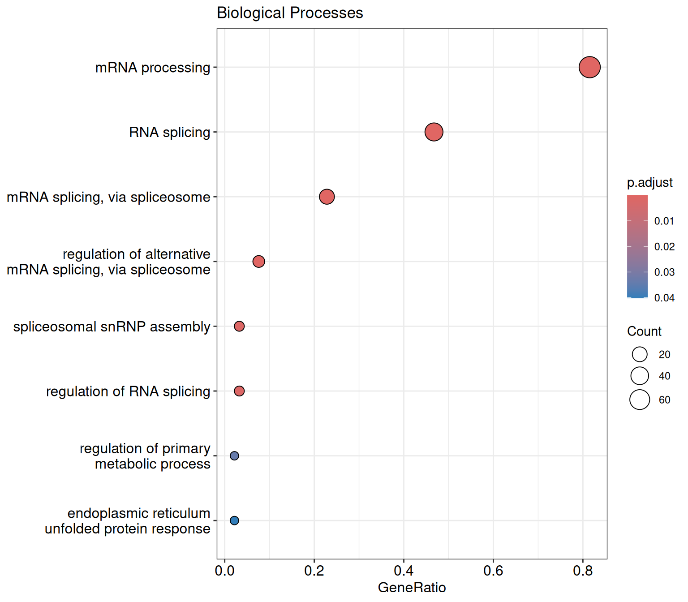

Getting started with clusterProfiler
2025-12-01
Last updated: 2025-12-01
Checks: 7 0
Knit directory: muse/
This reproducible R Markdown analysis was created with workflowr (version 1.7.1). The Checks tab describes the reproducibility checks that were applied when the results were created. The Past versions tab lists the development history.
Great! Since the R Markdown file has been committed to the Git repository, you know the exact version of the code that produced these results.
Great job! The global environment was empty. Objects defined in the global environment can affect the analysis in your R Markdown file in unknown ways. For reproduciblity it’s best to always run the code in an empty environment.
The command set.seed(20200712) was run prior to running
the code in the R Markdown file. Setting a seed ensures that any results
that rely on randomness, e.g. subsampling or permutations, are
reproducible.
Great job! Recording the operating system, R version, and package versions is critical for reproducibility.
Nice! There were no cached chunks for this analysis, so you can be confident that you successfully produced the results during this run.
Great job! Using relative paths to the files within your workflowr project makes it easier to run your code on other machines.
Great! You are using Git for version control. Tracking code development and connecting the code version to the results is critical for reproducibility.
The results in this page were generated with repository version 3bc33aa. See the Past versions tab to see a history of the changes made to the R Markdown and HTML files.
Note that you need to be careful to ensure that all relevant files for
the analysis have been committed to Git prior to generating the results
(you can use wflow_publish or
wflow_git_commit). workflowr only checks the R Markdown
file, but you know if there are other scripts or data files that it
depends on. Below is the status of the Git repository when the results
were generated:
Ignored files:
Ignored: .Rproj.user/
Ignored: data/1M_neurons_filtered_gene_bc_matrices_h5.h5
Ignored: data/293t/
Ignored: data/293t_3t3_filtered_gene_bc_matrices.tar.gz
Ignored: data/293t_filtered_gene_bc_matrices.tar.gz
Ignored: data/5k_Human_Donor1_PBMC_3p_gem-x_5k_Human_Donor1_PBMC_3p_gem-x_count_sample_filtered_feature_bc_matrix.h5
Ignored: data/5k_Human_Donor2_PBMC_3p_gem-x_5k_Human_Donor2_PBMC_3p_gem-x_count_sample_filtered_feature_bc_matrix.h5
Ignored: data/5k_Human_Donor3_PBMC_3p_gem-x_5k_Human_Donor3_PBMC_3p_gem-x_count_sample_filtered_feature_bc_matrix.h5
Ignored: data/5k_Human_Donor4_PBMC_3p_gem-x_5k_Human_Donor4_PBMC_3p_gem-x_count_sample_filtered_feature_bc_matrix.h5
Ignored: data/97516b79-8d08-46a6-b329-5d0a25b0be98.h5ad
Ignored: data/Parent_SC3v3_Human_Glioblastoma_filtered_feature_bc_matrix.tar.gz
Ignored: data/brain_counts/
Ignored: data/cl.obo
Ignored: data/cl.owl
Ignored: data/jurkat/
Ignored: data/jurkat:293t_50:50_filtered_gene_bc_matrices.tar.gz
Ignored: data/jurkat_293t/
Ignored: data/jurkat_filtered_gene_bc_matrices.tar.gz
Ignored: data/pbmc20k/
Ignored: data/pbmc20k_seurat/
Ignored: data/pbmc3k.h5ad
Ignored: data/pbmc3k/
Ignored: data/pbmc3k_bpcells_mat/
Ignored: data/pbmc3k_export.mtx
Ignored: data/pbmc3k_matrix.mtx
Ignored: data/pbmc3k_seurat.rds
Ignored: data/pbmc4k_filtered_gene_bc_matrices.tar.gz
Ignored: data/pbmc_1k_v3_filtered_feature_bc_matrix.h5
Ignored: data/pbmc_1k_v3_raw_feature_bc_matrix.h5
Ignored: data/refdata-gex-GRCh38-2020-A.tar.gz
Ignored: data/seurat_1m_neuron.rds
Ignored: data/t_3k_filtered_gene_bc_matrices.tar.gz
Ignored: r_packages_4.4.1/
Ignored: r_packages_4.5.0/
Untracked files:
Untracked: analysis/bioc.Rmd
Untracked: analysis/bioc_scrnaseq.Rmd
Untracked: bpcells_matrix/
Untracked: data/Caenorhabditis_elegans.WBcel235.113.gtf.gz
Untracked: data/GCF_043380555.1-RS_2024_12_gene_ontology.gaf.gz
Untracked: data/arab.rds
Untracked: data/astronomicalunit.csv
Untracked: data/femaleMiceWeights.csv
Untracked: data/lung_bcell.rds
Untracked: m3/
Untracked: women.json
Unstaged changes:
Modified: analysis/isoform_switch_analyzer.Rmd
Note that any generated files, e.g. HTML, png, CSS, etc., are not included in this status report because it is ok for generated content to have uncommitted changes.
These are the previous versions of the repository in which changes were
made to the R Markdown (analysis/cluster_profiler.Rmd) and
HTML (docs/cluster_profiler.html) files. If you’ve
configured a remote Git repository (see ?wflow_git_remote),
click on the hyperlinks in the table below to view the files as they
were in that past version.
| File | Version | Author | Date | Message |
|---|---|---|---|---|
| Rmd | 3bc33aa | Dave Tang | 2025-12-01 | Manually calculate RichFactor and FoldEnrichment |
| html | 18e8e9b | Dave Tang | 2025-05-26 | Build site. |
| Rmd | ec4e251 | Dave Tang | 2025-05-26 | Trying to reproduce the numerator |
| html | 94680bd | Dave Tang | 2025-05-24 | Build site. |
| Rmd | bc9f220 | Dave Tang | 2025-05-24 | Trying to recreate the ratios |
| html | 0ac8210 | Dave Tang | 2025-05-24 | Build site. |
| Rmd | 845e864 | Dave Tang | 2025-05-24 | Better explanations |
| html | c8e80cd | Dave Tang | 2025-05-23 | Build site. |
| Rmd | 8f0da00 | Dave Tang | 2025-05-23 | Check background length |
| html | 006e824 | Dave Tang | 2025-03-09 | Build site. |
| Rmd | fc1274d | Dave Tang | 2025-03-09 | Subset GO terms to only biological processes |
| html | f0166b0 | Dave Tang | 2025-03-09 | Build site. |
| Rmd | 6ad2657 | Dave Tang | 2025-03-09 | Checking missing GO terms |
| html | e815348 | Dave Tang | 2025-03-06 | Build site. |
| Rmd | 1fa9528 | Dave Tang | 2025-03-06 | Universal enrichment analyser |
| html | 2c080dc | Dave Tang | 2024-11-01 | Build site. |
| Rmd | 124a8d9 | Dave Tang | 2024-11-01 | Using clusterProfiler |
This package supports functional characteristics of both coding and non-coding genomics data for thousands of species with up-to-date gene annotation. It provides a univeral interface for gene functional annotation from a variety of sources and thus can be applied in diverse scenarios. It provides a tidy interface to access, manipulate, and visualize enrichment results to help users achieve efficient data interpretation. Datasets obtained from multiple treatments and time points can be analyzed and compared in a single run, easily revealing functional consensus and differences among distinct conditions.
Getting started
Install {clusterProfiler} and some dependencies.
if (!require("BiocManager", quietly = TRUE))
install.packages("BiocManager")
install.packages('ggarchery')
install.packages('ggtangle')
BiocManager::install("clusterProfiler")
BiocManager::install("org.Hs.eg.db")
BiocManager::install("GO.db")Load required libraries.
suppressPackageStartupMessages(library(tidyverse))
suppressPackageStartupMessages(library(ggarchery))
suppressPackageStartupMessages(library(clusterProfiler))
suppressPackageStartupMessages(library(org.Hs.eg.db))
suppressPackageStartupMessages(library(GO.db))Example data
We will use An example differential gene expression results table that contains {edgeR} results comparing normal versus cancer samples.
de_res <- read_csv("https://raw.githubusercontent.com/davetang/muse/refs/heads/main/data/13970886_edger_res.csv", show_col_types = FALSE)
head(de_res)# A tibble: 6 × 6
ensembl_gene_id logFC logCPM F PValue adjusted_pvalue
<chr> <dbl> <dbl> <dbl> <dbl> <dbl>
1 ENSG00000000003 2.73 4.83 4.28 0.0684 0.109
2 ENSG00000000005 -7.00 0.541 17.6 0.00216 0.0138
3 ENSG00000000419 0.120 5.34 0.114 0.743 0.776
4 ENSG00000000457 -0.708 5.31 3.35 0.0993 0.145
5 ENSG00000000460 -0.897 3.95 2.66 0.136 0.186
6 ENSG00000000938 1.54 5.60 1.86 0.205 0.258 Gene IDs
The {clusterProfiler} package uses the enrichGO()
function for performing a Gene
Ontology over-representation test. The arguments are:
gene- a vector of entrez gene id.OrgDb- OrgDb databasekeyType- keytype of input geneont- One of “BP”, “MF”, and “CC” subontologies, or “ALL” for all three.pvalueCutoff- adjusted pvalue cutoff on enrichment tests to reportpAdjustMethod- one of “holm”, “hochberg”, “hommel”, “bonferroni”, “BH”, “BY”, “fdr”, “none”universe- background genes. If missing, the all genes listed in the database (e.g. TERM2GENE table) will be used as background.qvalueCutoff- qvalue cutoff on enrichment tests to report as significant. Tests must pass i) pvalueCutoff on unadjusted pvalues, ii) pvalueCutoff on adjusted pvalues and iii) qvalueCutoff on qvalues to be reported.minGSSize- minimal size of genes annotated by Ontology term for testing.maxGSSize- maximal size of genes annotated for testingreadable- whether mapping gene ID to gene Namepool- If ont=‘ALL’, whether pool 3 GO sub-ontologies
Our example data uses Ensembl gene IDs, so we need to convert these into Entrez Gene IDs. We can use the {org.Hs.eg.db} package provided by Bioconductor, which provides genome wide annotation for human, primarily based on mapping using Entrez Gene identifiers.
ensembl_to_entrez <- AnnotationDbi::select(
org.Hs.eg.db,
keys = de_res$ensembl_gene_id,
columns = c("ENSEMBL", "ENTREZID"),
keytype = "ENSEMBL"
)'select()' returned 1:many mapping between keys and columnsde_res |>
dplyr::inner_join(ensembl_to_entrez, by = dplyr::join_by(ensembl_gene_id == ENSEMBL)) |>
dplyr::select(ensembl_gene_id, ENTREZID, dplyr::everything()) -> de_res
head(de_res)# A tibble: 6 × 7
ensembl_gene_id ENTREZID logFC logCPM F PValue adjusted_pvalue
<chr> <chr> <dbl> <dbl> <dbl> <dbl> <dbl>
1 ENSG00000000003 7105 2.73 4.83 4.28 0.0684 0.109
2 ENSG00000000005 64102 -7.00 0.541 17.6 0.00216 0.0138
3 ENSG00000000419 8813 0.120 5.34 0.114 0.743 0.776
4 ENSG00000000457 57147 -0.708 5.31 3.35 0.0993 0.145
5 ENSG00000000460 55732 -0.897 3.95 2.66 0.136 0.186
6 ENSG00000000938 2268 1.54 5.60 1.86 0.205 0.258 clusterProfiler
The example data contains results of a comparison between cancer samples and normal samples; positive fold change indicates that genes were expressed higher in cancer. There are a lot of genes up-regulated in cancer.
de_res |>
dplyr::filter(logFC > 0, adjusted_pvalue < 0.05) |>
nrow()[1] 1442Instead of examining the list of up-regulated genes individually, which would take a long time, we can see whether these genes are associated with Gene Ontology terms more often than expected. Our expectation will be based on the background.
First we’ll get the top 500 (an arbitrary number) most significantly up-regulated genes.
de_res |>
dplyr::filter(logFC > 0, adjusted_pvalue < 0.05) |>
dplyr::slice_min(order_by = adjusted_pvalue, n = 500) |>
dplyr::filter(!is.na(ENTREZID)) |>
dplyr::pull(ENTREZID) -> sig_up_genesCreate the background, i.e., the universe, using all genes tested for differential expression so we can test for over-representation.
de_res |>
dplyr::filter(!is.na(ENTREZID)) |>
dplyr::pull(ENTREZID) -> the_universeGene Ontology terms are grouped into three ontologies:
- Molecular Function (MF)
- Biological Process (BP), and
- Cellular Component (CC)
Here, we’ll perform an over-representation analysis using biological processes.
ego_bp <- enrichGO(
gene = sig_up_genes,
universe = the_universe,
OrgDb = org.Hs.eg.db,
ont = "BP",
pAdjustMethod = "BH",
pvalueCutoff = 0.01,
qvalueCutoff = 0.05,
minGSSize = 10,
maxGSSize = 500,
readable = TRUE
)
head(ego_bp) ID
GO:0016064 GO:0016064
GO:0019724 GO:0019724
GO:0002460 GO:0002460
GO:0002449 GO:0002449
GO:0002443 GO:0002443
GO:0006959 GO:0006959
Description
GO:0016064 immunoglobulin mediated immune response
GO:0019724 B cell mediated immunity
GO:0002460 adaptive immune response based on somatic recombination of immune receptors built from immunoglobulin superfamily domains
GO:0002449 lymphocyte mediated immunity
GO:0002443 leukocyte mediated immunity
GO:0006959 humoral immune response
GeneRatio BgRatio RichFactor FoldEnrichment zScore pvalue
GO:0016064 29/386 192/17354 0.15104167 6.790614 12.169056 3.046858e-16
GO:0019724 29/386 195/17354 0.14871795 6.686143 12.043556 4.660827e-16
GO:0002460 36/386 379/17354 0.09498681 4.270469 9.709355 2.085276e-13
GO:0002449 35/386 367/17354 0.09536785 4.287600 9.601062 4.074276e-13
GO:0002443 38/386 465/17354 0.08172043 3.674032 8.815698 4.599706e-12
GO:0006959 30/386 298/17354 0.10067114 4.526028 9.260213 5.283568e-12
p.adjust qvalue
GO:0016064 8.722738e-13 7.827737e-13
GO:0019724 8.722738e-13 7.827737e-13
GO:0002460 2.601729e-10 2.334777e-10
GO:0002449 3.812504e-10 3.421319e-10
GO:0002443 3.296066e-09 2.957871e-09
GO:0006959 3.296066e-09 2.957871e-09
geneID
GO:0016064 IGLC1/IGHG4/IGHG2/IGHG3/IGHV5-51/IGLL5/IGHV4-39/IGLC3/IGHV3-23/IGHV2-5/CD27/IGHV3-30/IGHV3-48/BATF/IGHG1/IGLC2/IGHV4-61/IGHA2/IGHV3-7/IGHV3-21/IGHV3-33/IGHV4-59/C4A/IGHV1-69D/FOXP3/IGKC/IGHV3-15/TREM2/CD28
GO:0019724 IGLC1/IGHG4/IGHG2/IGHG3/IGHV5-51/IGLL5/IGHV4-39/IGLC3/IGHV3-23/IGHV2-5/CD27/IGHV3-30/IGHV3-48/BATF/IGHG1/IGLC2/IGHV4-61/IGHA2/IGHV3-7/IGHV3-21/IGHV3-33/IGHV4-59/C4A/IGHV1-69D/FOXP3/IGKC/IGHV3-15/TREM2/CD28
GO:0002460 IGLC1/IGHG4/IGHG2/IGHG3/IGHV5-51/IGLL5/IGHV4-39/IGLC3/IL4I1/IRF4/JAK3/IGHV3-23/IGHV2-5/CD27/IGHV3-30/CCL19/IGHV3-48/CXCL13/LILRB4/BATF/IGHG1/IGLC2/IGHV4-61/IGHA2/IGHV3-7/IGHV3-21/IGHV3-33/IGHV4-59/C4A/IGHV1-69D/FOXP3/IGKC/IGHV3-15/PLA2G4A/TREM2/CD28
GO:0002449 IGLC1/IGHG4/IGHG2/IGHG3/IGHV5-51/IGLL5/IGHV4-39/IGLC3/IL4I1/IGHV3-23/IGHV2-5/CD27/IGHV3-30/SLAMF7/IGHV3-48/NECTIN4/LILRB4/BATF/IGHG1/IGLC2/IGHV4-61/IGHA2/IGHV3-7/IGHV3-21/IGHV3-33/IGHV4-59/C4A/IGHV1-69D/CD2/FOXP3/LGALS9/IGKC/IGHV3-15/TREM2/CD28
GO:0002443 IGLC1/IGHG4/IGHG2/IGHG3/IGHV5-51/IGLL5/IGHV4-39/IGLC3/IL4I1/JAK3/IGHV3-23/IGHV2-5/CD27/IGHV3-30/SLAMF7/IGHV3-48/NECTIN4/LILRB4/BATF/IGHG1/IGLC2/IGHV4-61/IGHA2/IGHV3-7/IGHV3-21/IGHV3-33/IGHV4-59/C4A/CCL3/IGHV1-69D/CD84/CD2/FOXP3/LGALS9/IGKC/IGHV3-15/TREM2/CD28
GO:0006959 WFDC2/IGHG4/IGHG2/IGHG3/IGKV3-20/CXCL14/POU2AF1/MMP7/CCL22/BPIFA1/CXCL9/CCL19/CXCL13/CXCL1/LTF/CXCL10/MS4A1/IGHM/IGHG1/POU2F2/CCL7/TNFRSF21/ADM/IGHA2/C4A/CCL3/CXCL8/CCL8/TREM2/CD28
Count
GO:0016064 29
GO:0019724 29
GO:0002460 36
GO:0002449 35
GO:0002443 38
GO:0006959 30Here, we’ll perform an over-representation analysis using molecular functions.
ego_mf <- enrichGO(
gene = sig_up_genes,
universe = the_universe,
OrgDb = org.Hs.eg.db,
ont = "MF",
pAdjustMethod = "BH",
pvalueCutoff = 0.01,
qvalueCutoff = 0.05,
minGSSize = 10,
maxGSSize = 500,
readable = TRUE
)
head(ego_mf) ID Description GeneRatio BgRatio
GO:0003823 GO:0003823 antigen binding 50/387 158/17900
GO:0008009 GO:0008009 chemokine activity 10/387 44/17900
GO:0034987 GO:0034987 immunoglobulin receptor binding 7/387 18/17900
GO:0042379 GO:0042379 chemokine receptor binding 11/387 68/17900
GO:1901681 GO:1901681 sulfur compound binding 19/387 273/17900
GO:0005539 GO:0005539 glycosaminoglycan binding 17/387 238/17900
RichFactor FoldEnrichment zScore pvalue p.adjust
GO:0003823 0.31645570 14.637098 25.594038 1.316692e-44 9.348515e-42
GO:0008009 0.22727273 10.512098 9.390747 2.560692e-08 9.090455e-06
GO:0034987 0.38888889 17.987367 10.718743 5.420961e-08 1.282961e-05
GO:0042379 0.16176471 7.482140 7.960905 2.126713e-07 3.774916e-05
GO:1901681 0.06959707 3.219089 5.492328 8.292546e-06 1.177542e-03
GO:0005539 0.07142857 3.303802 5.318673 1.769284e-05 2.057883e-03
qvalue
GO:0003823 8.787188e-42
GO:0008009 8.544623e-06
GO:0034987 1.205926e-05
GO:0042379 3.548253e-05
GO:1901681 1.106837e-03
GO:0005539 1.934319e-03
geneID
GO:0003823 IGKV4-1/IGLV1-51/IGLV1-44/IGLV1-40/IGLV3-21/IGLC1/IGHG4/IGHG2/IGHG3/IGHV5-51/IGKV3-20/IGKV1-5/IGKV3-15/IGLL5/IGHV4-39/IGLV1-47/IGLV2-23/IGLV2-14/IGLC3/IGKV1D-39/IGHV3-23/IGHV2-5/HLA-DQB2/IGLV3-19/IGHV3-30/IGHV3-48/IGKV2D-28/IGLV6-57/IGLV3-25/IGHM/IGHG1/IGLC2/SLC7A5/IGHV4-61/IGLV2-8/IGLV7-43/IGLV3-27/IGHA2/IGHV3-7/IGHV3-21/IGHV3-33/IGHV4-59/HLA-DQA1/HLA-DQA2/IGKV1-39/IGKV2-30/IGHV1-69D/IGKC/IGHV3-15/IGKV1-17
GO:0008009 CXCL14/CCL22/CXCL9/CCL19/CXCL13/CXCL10/CCL7/CCL3/CXCL8/CCL8
GO:0034987 IGHG4/IGHG2/IGHG3/IGHM/IGHG1/ADAM28/IGHA2
GO:0042379 CXCL14/CCL22/CXCL9/CCL19/CXCL13/CXCL10/CCL7/CCL3/CXCL8/STAT1/CCL8
GO:1901681 PLA2G2D/CXCL13/LTF/CXCL10/TMEM184A/MDK/PTGES/CCN4/COMP/CCL7/NRP2/RCC1/CHST15/ADGRG1/THBS2/CXCL8/PTGES2/GSS/CCL8
GO:0005539 PLA2G2D/CXCL13/LTF/CXCL10/IGHM/TMEM184A/MDK/CEMIP/CCN4/COMP/CCL7/NRP2/ADGRG1/THBS2/CXCL8/CCL8/TREM2
Count
GO:0003823 50
GO:0008009 10
GO:0034987 7
GO:0042379 11
GO:1901681 19
GO:0005539 17Examining the results
Results are stored in an enrichResult class.
class(ego_mf)[1] "enrichResult"
attr(,"package")
[1] "DOSE"Slot names of the class.
slotNames(ego_mf) [1] "result" "pvalueCutoff" "pAdjustMethod" "qvalueCutoff"
[5] "organism" "ontology" "gene" "keytype"
[9] "universe" "gene2Symbol" "geneSets" "readable"
[13] "termsim" "method" "dr" One question that has been asked (and not conclusively answered) on the interweb is why do the universe lengths differ when the same list of background genes is provided?
length(the_universe)[1] 28981length(ego_mf@universe)[1] 17900length(ego_bp@universe)[1] 17354In order to address this, we will first create a Entrez Gene ID to GO term lookup table.
entrez_to_go <- select(
org.Hs.eg.db,
keys = keys(org.Hs.eg.db, keytype = "ENTREZID"),
columns = c("GO", "ONTOLOGY"),
keytype = "ENTREZID"
)'select()' returned 1:many mapping between keys and columnshead(entrez_to_go) ENTREZID GO EVIDENCE ONTOLOGY
1 1 GO:0002764 IBA BP
2 1 GO:0005576 HDA CC
3 1 GO:0005576 IDA CC
4 1 GO:0005576 TAS CC
5 1 GO:0005615 HDA CC
6 1 GO:0005886 IBA CCIntuitively (to me), the only reason why the universe lengths are different per ontology group is because there is some sort of filtering performed per ontology group. One gene is associated to various GO terms and if you group them into the three respective groups, their numbers might be different. Here’s an example.
entrez_to_go |>
dplyr::filter(ENTREZID == "1") |>
dplyr::summarise(n = n(), .by = ONTOLOGY) ONTOLOGY n
1 BP 1
2 CC 11Let’s reproduce the universe list for molecular functions. The pipeline below is:
- Filter the Entrez Gene ID to GO term lookup table to only contain GO terms in the MF group
- Output only the
ENTREZIDandGOcolumns - Keep only the unique rows
- Keep only the Entrez Gene IDs in our background
- Output all the Entrez Gene IDs
- Keep only unique IDs
- Calculate the length
length(ego_mf@universe)[1] 17900dplyr::filter(entrez_to_go, ONTOLOGY == "MF") |>
dplyr::select(ENTREZID, GO) |>
dplyr::distinct() |>
dplyr::filter(ENTREZID %in% the_universe) |>
dplyr::pull(ENTREZID) |>
unique() |>
length()[1] 17900Repeat the same workflow on biological processes.
length(ego_bp@universe)[1] 17354dplyr::filter(entrez_to_go, ONTOLOGY == "BP") |>
dplyr::select(ENTREZID, GO) |>
dplyr::distinct() |>
dplyr::filter(ENTREZID %in% the_universe) |>
dplyr::pull(ENTREZID) |>
unique() |>
length()[1] 17354Getting the same lengths confirms our intuition that gene lists are created by only keeping genes that have at least one GO term in the Gene Ontology group of interest.
Ratios
Another question asked on the interweb and not conclusively answered
is how are GeneRatio and BgRatio calculated.
Since we now know that genes are filtered per ontology group we need to
take this into account. Let’s reproduce the first result for biological
processes.
ego_bp |>
as.data.frame() |>
dplyr::slice_head(n = 1) ID Description GeneRatio
GO:0016064 GO:0016064 immunoglobulin mediated immune response 29/386
BgRatio RichFactor FoldEnrichment zScore pvalue
GO:0016064 192/17354 0.1510417 6.790614 12.16906 3.046858e-16
p.adjust qvalue
GO:0016064 8.722738e-13 7.827737e-13
geneID
GO:0016064 IGLC1/IGHG4/IGHG2/IGHG3/IGHV5-51/IGLL5/IGHV4-39/IGLC3/IGHV3-23/IGHV2-5/CD27/IGHV3-30/IGHV3-48/BATF/IGHG1/IGLC2/IGHV4-61/IGHA2/IGHV3-7/IGHV3-21/IGHV3-33/IGHV4-59/C4A/IGHV1-69D/FOXP3/IGKC/IGHV3-15/TREM2/CD28
Count
GO:0016064 29Re-create denominators of GeneRatio and
BgRatio.
gene_list_to_go <- function(gene_list, ont = "BP"){
dplyr::filter(entrez_to_go, ONTOLOGY == ont) |>
dplyr::select(ENTREZID, GO) |>
dplyr::filter(ENTREZID %in% gene_list)
}
gene_list_to_go(sig_up_genes) |>
pull(ENTREZID) |>
unique() -> sig_up_genes_entrez
length(sig_up_genes_entrez)[1] 386gene_list_to_go(the_universe) |>
pull(ENTREZID) |>
unique() -> the_universe_entrez
length(the_universe_entrez)[1] 17354GO:0016064 is associated to 19 Entrez Gene IDs but the results above are 29.
entrez_to_go |>
dplyr::filter(ENTREZID %in% sig_up_genes_entrez) |>
dplyr::summarise(n = n(), .by = "GO") |>
dplyr::filter(GO == "GO:0016064") GO n
1 GO:0016064 19The numerator can also be calculated by tallying the
geneID column.
ego_bp |>
as.data.frame() |>
dplyr::slice_head(n = 1) |>
dplyr::pull(geneID) |>
stringr::str_split("/") |>
unlist() |>
unique() -> ego_bp_first_gs
ego_bp_first_gs [1] "IGLC1" "IGHG4" "IGHG2" "IGHG3" "IGHV5-51" "IGLL5"
[7] "IGHV4-39" "IGLC3" "IGHV3-23" "IGHV2-5" "CD27" "IGHV3-30"
[13] "IGHV3-48" "BATF" "IGHG1" "IGLC2" "IGHV4-61" "IGHA2"
[19] "IGHV3-7" "IGHV3-21" "IGHV3-33" "IGHV4-59" "C4A" "IGHV1-69D"
[25] "FOXP3" "IGKC" "IGHV3-15" "TREM2" "CD28" A clue to reproducing the numerator is that gene symbols are used, so there must be some Entrez Gene ID to gene symbol conversion (potentially contributing to a one-to-many lookup). We will create a Entrez Gene ID to gene symbol lookup table.
# columns(org.Hs.eg.db)
entrez_to_gene_symbol <- select(
org.Hs.eg.db,
keys = keys(org.Hs.eg.db, keytype = "ENTREZID"),
columns = c("SYMBOL", "ALIAS"),
keytype = "ENTREZID"
)'select()' returned 1:many mapping between keys and columnshead(entrez_to_gene_symbol) ENTREZID SYMBOL ALIAS
1 1 A1BG A1B
2 1 A1BG ABG
3 1 A1BG GAB
4 1 A1BG HYST2477
5 1 A1BG A1BG
6 2 A2M A2MDGet the list of Entrez Gene IDs for up-regulated genes for the first result of the biological processes enrichment analysis.
Note that this length does not match the numerator of
GeneRatio.
gene_list_to_go(sig_up_genes) |>
dplyr::filter(GO == "GO:0016064") |>
dplyr::pull(ENTREZID) |>
unique() -> eg1
eg1 [1] "939" "3514" "3537" "3538" "3539" "28388"
[7] "28391" "28392" "28394" "28424" "28434" "28439"
[13] "28442" "28444" "28448" "28452" "28457" "100423062"
[19] "102723169"Convert to gene symbols.
entrez_to_gene_symbol |>
dplyr::filter(ENTREZID %in% eg1) -> eg1_gene_symbol
eg1_gene_symbol ENTREZID SYMBOL ALIAS
1 939 CD27 S152
2 939 CD27 S152. LPFS2
3 939 CD27 T14
4 939 CD27 TNFRSF7
5 939 CD27 Tp55
6 939 CD27 CD27
7 3514 IGKC HCAK1
8 3514 IGKC IGKCD
9 3514 IGKC Km
10 3514 IGKC IGKC
11 3537 IGLC1 IGLC
12 3537 IGLC1 IGLC1
13 3538 IGLC2 IGLC
14 3538 IGLC2 IGLC2
15 3539 IGLC3 IGLC
16 3539 IGLC3 IGLC3
17 28388 IGHV5-51 IGHV551
18 28388 IGHV5-51 VH
19 28388 IGHV5-51 IGHV5-51
20 28391 IGHV4-61 IGHV461
21 28391 IGHV4-61 VH
22 28391 IGHV4-61 IGHV4-61
23 28392 IGHV4-59 IGHV459
24 28392 IGHV4-59 VH
25 28392 IGHV4-59 IGHV4-59
26 28394 IGHV4-39 IGHV439
27 28394 IGHV4-39 VH
28 28394 IGHV4-39 IGHV4-39
29 28424 IGHV3-48 IGHV348
30 28424 IGHV3-48 VH
31 28424 IGHV3-48 IGHV3-48
32 28434 IGHV3-33 IGHV333
33 28434 IGHV3-33 VH
34 28434 IGHV3-33 IGHV3-33
35 28439 IGHV3-30 IGHV330
36 28439 IGHV3-30 VH
37 28439 IGHV3-30 IGHV3-30
38 28442 IGHV3-23 DP47
39 28442 IGHV3-23 IGHV323
40 28442 IGHV3-23 V3-23
41 28442 IGHV3-23 VH26
42 28442 IGHV3-23 IGHV3-23
43 28444 IGHV3-21 IGHV321
44 28444 IGHV3-21 VH
45 28444 IGHV3-21 IGHV3-21
46 28448 IGHV3-15 IGHV315
47 28448 IGHV3-15 VH
48 28448 IGHV3-15 IGHV3-15
49 28452 IGHV3-7 IGHV37
50 28452 IGHV3-7 VH
51 28452 IGHV3-7 IGHV3-7
52 28457 IGHV2-5 IGHV25
53 28457 IGHV2-5 VH
54 28457 IGHV2-5 IGHV2-5
55 100423062 IGLL5 IGL
56 100423062 IGLL5 IGLV
57 100423062 IGLL5 VL-MAR
58 100423062 IGLL5 IGLL5
59 102723169 IGHV1-69D IGHV1-69DAre the gene symbols in the enriched result in our table of gene symbol and aliases?
ego_bp_first_gs %in% c(unique(eg1_gene_symbol$SYMBOL), unique(eg1_gene_symbol$ALIAS)) [1] TRUE FALSE FALSE FALSE TRUE TRUE TRUE TRUE TRUE TRUE TRUE TRUE
[13] TRUE FALSE FALSE TRUE TRUE FALSE TRUE TRUE TRUE TRUE FALSE TRUE
[25] FALSE TRUE TRUE FALSE FALSEAre all the gene symbols in the enriched results in our Entrez Gene ID to gene symbol lookup table? (Yes.)
entrez_to_gene_symbol |>
dplyr::filter(SYMBOL %in% ego_bp_first_gs) |>
dplyr::pull(SYMBOL) |>
unique() |>
length()[1] 29Get the Entrez Gene IDs from the gene symbols of the results.
entrez_to_gene_symbol |>
dplyr::filter(SYMBOL %in% ego_bp_first_gs) |>
dplyr::pull(ENTREZID) |>
unique() -> ego_bp_first_gs_entrez
ego_bp_first_gs_entrez [1] "720" "939" "940" "3494" "3500" "3501"
[7] "3502" "3503" "3514" "3537" "3538" "3539"
[13] "10538" "28388" "28391" "28392" "28394" "28424"
[19] "28434" "28439" "28442" "28444" "28448" "28452"
[25] "28457" "50943" "54209" "100423062" "102723169"Why are these Entrez Gene IDs included?
additional_ids <- setdiff(ego_bp_first_gs_entrez, eg1)
additional_ids [1] "720" "940" "3494" "3500" "3501" "3502" "3503" "10538" "50943"
[10] "54209"Are these additional IDs in our results?
additional_ids %in% sig_up_genes [1] TRUE TRUE TRUE TRUE TRUE TRUE TRUE TRUE TRUE TRUEBuild GO to Entrez Gene ID lookup.
go_to_entrez <- select(
org.Hs.eg.db,
keys = keys(GO.db),
columns = "ENTREZID",
keytype = "GO"
)'select()' returned 1:many mapping between keys and columnshead(go_to_entrez) GO EVIDENCE ONTOLOGY ENTREZID
1 GO:0000001 <NA> <NA> <NA>
2 GO:0000002 TAS BP 291
3 GO:0000002 IMP BP 1890
4 GO:0000002 ISS BP 4205
5 GO:0000002 IMP BP 4358
6 GO:0000002 IMP BP 4976I still get 19.
go_to_entrez |>
dplyr::filter(GO == "GO:0016064", ENTREZID %in% sig_up_genes) |>
dplyr::pull(ENTREZID) |>
unique() |>
length()[1] 19Include GO.
entrez_to_symbol_and_go <- select(
org.Hs.eg.db,
keys = keys(org.Hs.eg.db, keytype = "ENTREZID"),
columns = c("SYMBOL", "GO"),
keytype = "ENTREZID"
)'select()' returned 1:many mapping between keys and columnsentrez_to_symbol_and_go |>
dplyr::filter(GO == "GO:0016064", ENTREZID %in% sig_up_genes) ENTREZID SYMBOL GO EVIDENCE ONTOLOGY
1 939 CD27 GO:0016064 NAS BP
2 3514 IGKC GO:0016064 IBA BP
3 3537 IGLC1 GO:0016064 IBA BP
4 3538 IGLC2 GO:0016064 IBA BP
5 3539 IGLC3 GO:0016064 IBA BP
6 28388 IGHV5-51 GO:0016064 IBA BP
7 28391 IGHV4-61 GO:0016064 IBA BP
8 28392 IGHV4-59 GO:0016064 IBA BP
9 28394 IGHV4-39 GO:0016064 IBA BP
10 28424 IGHV3-48 GO:0016064 IBA BP
11 28434 IGHV3-33 GO:0016064 IBA BP
12 28439 IGHV3-30 GO:0016064 IBA BP
13 28442 IGHV3-23 GO:0016064 IBA BP
14 28444 IGHV3-21 GO:0016064 IBA BP
15 28448 IGHV3-15 GO:0016064 IBA BP
16 28452 IGHV3-7 GO:0016064 IBA BP
17 28457 IGHV2-5 GO:0016064 IBA BP
18 100423062 IGLL5 GO:0016064 IBA BP
19 102723169 IGHV1-69D GO:0016064 IBA BPStill a mystery on the number 29.
RichFactor
The RichFactor is calculated by Count /
M, where Count is the number of genes from
your input list annotated to the term, and M is the total
number of genes in the background that are annotated to that term (the
numerator of BgRatio).
ego_bp |>
as.data.frame() |>
dplyr::slice_head(n = 1) -> my_df
my_df$Count / as.numeric(unlist(stringr::str_split(string = my_df$BgRatio, pattern = '/'))[1]) == my_df$RichFactor[1] TRUEFoldEnrichment
FoldEnrichment is simply GeneRatio divided
by BgRatio.
ego_bp |>
as.data.frame() |>
dplyr::slice_head(n = 1) -> my_df
all.equal(my_df$FoldEnrichment, eval(parse(text = my_df$GeneRatio)) / eval(parse(text = my_df$BgRatio)))[1] TRUEVisualisations
Bar plot showing each enriched GO term coloured by the adjusted p-value.
barplot(ego_bp, showCategory=10)
Dot plot showing each enriched GO term with associated statistics.
dotplot(ego_bp, showCategory=10)
Heat plot showing the enriched GO terms on the y-axis and the genes on the x-axis. Genes with the associated GO term are highlighted.
heatplot(ego_bp, showCategory=10)
goplot shows the gene ontology graph with the enriched
GO terms highlighted.
goplot(ego_bp)Warning: ggrepel: 1 unlabeled data points (too many overlaps). Consider
increasing max.overlaps
Another nice feature of {clusterProfiler} is that you can plot multiple gene lists together. We can create a list of down-regulated genes.
de_res |>
dplyr::filter(logFC < 0, adjusted_pvalue < 0.05) |>
dplyr::slice_min(order_by = adjusted_pvalue, n = 500) |>
dplyr::filter(!is.na(ENTREZID)) |>
dplyr::pull(ENTREZID) -> sig_down_genesPerform GO enrichment on two gene lists.
my_gene_list <- list(
up_gene = sig_up_genes,
down_gene = sig_down_genes
)
ego_bp_both <- compareCluster(
geneCluster = my_gene_list,
fun = "enrichGO",
universe = the_universe,
OrgDb = org.Hs.eg.db,
keyType = "ENTREZID",
ont = "BP",
pvalueCutoff = 0.01,
pAdjustMethod = "BH",
qvalueCutoff = 0.05,
minGSSize = 10,
maxGSSize = 500,
readable = TRUE
)
head(as.data.frame(ego_bp_both)) Cluster ID
1 up_gene GO:0016064
2 up_gene GO:0019724
3 up_gene GO:0002460
4 up_gene GO:0002449
5 up_gene GO:0002443
6 up_gene GO:0006959
Description
1 immunoglobulin mediated immune response
2 B cell mediated immunity
3 adaptive immune response based on somatic recombination of immune receptors built from immunoglobulin superfamily domains
4 lymphocyte mediated immunity
5 leukocyte mediated immunity
6 humoral immune response
GeneRatio BgRatio RichFactor FoldEnrichment zScore pvalue
1 29/386 192/17354 0.15104167 6.790614 12.169056 3.046858e-16
2 29/386 195/17354 0.14871795 6.686143 12.043556 4.660827e-16
3 36/386 379/17354 0.09498681 4.270469 9.709355 2.085276e-13
4 35/386 367/17354 0.09536785 4.287600 9.601062 4.074276e-13
5 38/386 465/17354 0.08172043 3.674032 8.815698 4.599706e-12
6 30/386 298/17354 0.10067114 4.526028 9.260213 5.283568e-12
p.adjust qvalue
1 8.722738e-13 7.827737e-13
2 8.722738e-13 7.827737e-13
3 2.601729e-10 2.334777e-10
4 3.812504e-10 3.421319e-10
5 3.296066e-09 2.957871e-09
6 3.296066e-09 2.957871e-09
geneID
1 IGLC1/IGHG4/IGHG2/IGHG3/IGHV5-51/IGLL5/IGHV4-39/IGLC3/IGHV3-23/IGHV2-5/CD27/IGHV3-30/IGHV3-48/BATF/IGHG1/IGLC2/IGHV4-61/IGHA2/IGHV3-7/IGHV3-21/IGHV3-33/IGHV4-59/C4A/IGHV1-69D/FOXP3/IGKC/IGHV3-15/TREM2/CD28
2 IGLC1/IGHG4/IGHG2/IGHG3/IGHV5-51/IGLL5/IGHV4-39/IGLC3/IGHV3-23/IGHV2-5/CD27/IGHV3-30/IGHV3-48/BATF/IGHG1/IGLC2/IGHV4-61/IGHA2/IGHV3-7/IGHV3-21/IGHV3-33/IGHV4-59/C4A/IGHV1-69D/FOXP3/IGKC/IGHV3-15/TREM2/CD28
3 IGLC1/IGHG4/IGHG2/IGHG3/IGHV5-51/IGLL5/IGHV4-39/IGLC3/IL4I1/IRF4/JAK3/IGHV3-23/IGHV2-5/CD27/IGHV3-30/CCL19/IGHV3-48/CXCL13/LILRB4/BATF/IGHG1/IGLC2/IGHV4-61/IGHA2/IGHV3-7/IGHV3-21/IGHV3-33/IGHV4-59/C4A/IGHV1-69D/FOXP3/IGKC/IGHV3-15/PLA2G4A/TREM2/CD28
4 IGLC1/IGHG4/IGHG2/IGHG3/IGHV5-51/IGLL5/IGHV4-39/IGLC3/IL4I1/IGHV3-23/IGHV2-5/CD27/IGHV3-30/SLAMF7/IGHV3-48/NECTIN4/LILRB4/BATF/IGHG1/IGLC2/IGHV4-61/IGHA2/IGHV3-7/IGHV3-21/IGHV3-33/IGHV4-59/C4A/IGHV1-69D/CD2/FOXP3/LGALS9/IGKC/IGHV3-15/TREM2/CD28
5 IGLC1/IGHG4/IGHG2/IGHG3/IGHV5-51/IGLL5/IGHV4-39/IGLC3/IL4I1/JAK3/IGHV3-23/IGHV2-5/CD27/IGHV3-30/SLAMF7/IGHV3-48/NECTIN4/LILRB4/BATF/IGHG1/IGLC2/IGHV4-61/IGHA2/IGHV3-7/IGHV3-21/IGHV3-33/IGHV4-59/C4A/CCL3/IGHV1-69D/CD84/CD2/FOXP3/LGALS9/IGKC/IGHV3-15/TREM2/CD28
6 WFDC2/IGHG4/IGHG2/IGHG3/IGKV3-20/CXCL14/POU2AF1/MMP7/CCL22/BPIFA1/CXCL9/CCL19/CXCL13/CXCL1/LTF/CXCL10/MS4A1/IGHM/IGHG1/POU2F2/CCL7/TNFRSF21/ADM/IGHA2/C4A/CCL3/CXCL8/CCL8/TREM2/CD28
Count
1 29
2 29
3 36
4 35
5 38
6 30Dot plot with enriched GO terms by gene list.
dotplot(ego_bp_both, showCategory = 15)
enricher
enricher() is a universal enrichment analyzer.
- gene - a vector of gene id
- universe - background genes. If missing, the all genes listed in the database (eg TERM2GENE table) will be used as background.
- minGSSize - minimal size of genes annotated for testing
- maxGSSize - maximal size of genes annotated for testing
- TERM2GENE - user input annotation of TERM TO GENE mapping, a data.frame of 2 column with term and gene. Only used when gson is NULL.
- TERM2NAME - user input of TERM TO NAME mapping, a data.frame of 2 column with term and name. Only used when gson is NULL.
TERM2NAME is needed to map the GOID to its term (description).
An easy way of obtaining this mapping is by extracting the information from the Bioconductor GO annotation database package ({GO.db}).
# extract a named vector of all terms
goterms <- AnnotationDbi::Term(GOTERM)
#convert into a data frame
term2name <- data.frame(
"term"=names(goterms),
"name"=goterms
)
dim(term2name)[1] 40268 2head(term2name) term name
GO:0000001 GO:0000001 mitochondrion inheritance
GO:0000002 GO:0000002 mitochondrial genome maintenance
GO:0000006 GO:0000006 high-affinity zinc transmembrane transporter activity
GO:0000007 GO:0000007 low-affinity zinc ion transmembrane transporter activity
GO:0000009 GO:0000009 alpha-1,6-mannosyltransferase activity
GO:0000010 GO:0000010 heptaprenyl diphosphate synthase activityGet the ontologies and store in term2name.
ontologies <- AnnotationDbi::select(x = GO.db, keys = names(goterms), columns = c("GOID", "ONTOLOGY"))'select()' returned 1:1 mapping between keys and columnslength(unique(term2name$term))[1] 40268length(unique(ontologies$GOID))[1] 40268stopifnot(all(term2name$term == ontologies$GOID))
term2name$ontology <- ontologies$ONTOLOGY
head(term2name) term name
GO:0000001 GO:0000001 mitochondrion inheritance
GO:0000002 GO:0000002 mitochondrial genome maintenance
GO:0000006 GO:0000006 high-affinity zinc transmembrane transporter activity
GO:0000007 GO:0000007 low-affinity zinc ion transmembrane transporter activity
GO:0000009 GO:0000009 alpha-1,6-mannosyltransferase activity
GO:0000010 GO:0000010 heptaprenyl diphosphate synthase activity
ontology
GO:0000001 BP
GO:0000002 BP
GO:0000006 MF
GO:0000007 MF
GO:0000009 MF
GO:0000010 MFany(is.na(term2name$term))[1] FALSEterm2name can then be used when calling
enrichr(), by specifying TERM2NAME=term2name.
Be sure, though, to check that term2name contains all GOIDs
present in your TERM2GENE mapping.
Demo input.
demo <- readr::read_csv("data/nfurzeri_gene_id_to_go_id.csv.gz", show_col_types = FALSE)
head(demo)# A tibble: 6 × 2
ensembl_gene_id go_id
<chr> <chr>
1 ENSNFUG00015000040 <NA>
2 ENSNFUG00015000041 GO:0007156
3 ENSNFUG00015000041 GO:0005886
4 ENSNFUG00015000041 GO:0005737
5 ENSNFUG00015000041 GO:0050808
6 ENSNFUG00015000041 GO:0007411Check if we have all the GO IDs.
goids <- demo$go_id
goids <- goids[!is.na(goids)]
table(unique(goids) %in% term2name$term)
FALSE TRUE
48 6499 Which GO IDs are missing?
missing_goids <- setdiff(unique(goids), term2name$term)
missing_goids [1] "GO:0001054" "GO:0008272" "GO:0102769" "GO:0032508" "GO:0006211"
[6] "GO:0006880" "GO:0014070" "GO:0097428" "GO:0043402" "GO:0045263"
[11] "GO:0045261" "GO:0030374" "GO:0004024" "GO:0044255" "GO:0106035"
[16] "GO:0003896" "GO:0097153" "GO:0001056" "GO:0001055" "GO:0046538"
[21] "GO:0061780" "GO:0090179" "GO:0097159" "GO:0051103" "GO:0004310"
[26] "GO:0006268" "GO:0035308" "GO:0042989" "GO:0042543" "GO:0090309"
[31] "GO:0052794" "GO:0052795" "GO:0052796" "GO:0071407" "GO:0034998"
[36] "GO:1901615" "GO:0022417" "GO:0102148" "GO:0097199" "GO:1901006"
[41] "GO:0005355" "GO:0046177" "GO:0046950" "GO:0002094" "GO:0003867"
[46] "GO:0045226" "GO:0060775" "GO:1901617"They are missing because they have become obsolete.
missing_goids %in% keys(GOOBSOLETE) [1] TRUE TRUE TRUE TRUE TRUE TRUE TRUE TRUE TRUE TRUE TRUE TRUE TRUE TRUE TRUE
[16] TRUE TRUE TRUE TRUE TRUE TRUE TRUE TRUE TRUE TRUE TRUE TRUE TRUE TRUE TRUE
[31] TRUE TRUE TRUE TRUE TRUE TRUE TRUE TRUE TRUE TRUE TRUE TRUE TRUE TRUE TRUE
[46] TRUE TRUE TRUEPrepare data frame of 2 column with term and gene.
demo |>
dplyr::filter(!is.na(go_id)) |>
dplyr::rename(term = go_id, gene = ensembl_gene_id) |>
dplyr::select(term, gene) |>
dplyr::arrange(term) -> term2gene
lookup <- AnnotationDbi::select(x = GO.db, keys = term2gene$term, columns = c("GOID", "ONTOLOGY"))'select()' returned many:1 mapping between keys and columnsstopifnot(all(lookup$GOID == term2gene$term))
term2gene$ontology <- lookup$ONTOLOGY
head(term2gene)# A tibble: 6 × 3
term gene ontology
<chr> <chr> <chr>
1 GO:0000002 ENSNFUG00015006992 BP
2 GO:0000002 ENSNFUG00015020070 BP
3 GO:0000002 ENSNFUG00015013825 BP
4 GO:0000002 ENSNFUG00015019642 BP
5 GO:0000009 ENSNFUG00015008531 MF
6 GO:0000012 ENSNFUG00015012664 BP Test with random genes.
set.seed(1984)
my_genes <- sample(x = unique(term2gene$gene), size = 100, replace = FALSE)
res <- enricher(
gene = my_genes,
TERM2GENE = dplyr::filter(term2gene, ontology == "BP"),
TERM2NAME = dplyr::filter(term2name, ontology == "BP")
)
res#
# over-representation test
#
#...@organism UNKNOWN
#...@ontology UNKNOWN
#...@gene chr [1:100] "ENSNFUG00015003803" "ENSNFUG00015000174" "ENSNFUG00015015379" ...
#...pvalues adjusted by 'BH' with cutoff <0.05
#...0 enriched terms found
#...Citation
S Xu, E Hu, Y Cai, Z Xie, X Luo, L Zhan, W Tang, Q Wang, B Liu, R Wang, W Xie, T Wu, L Xie, G Yu. Using clusterProfiler to characterize multiomics data. Nature Protocols. 2024, 19(11):3292-3320 Test with genes associated with same term.
term2gene |>
dplyr::group_by(term) |>
dplyr::summarise(n = n()) |>
dplyr::arrange(-n) -> dev_null
my_term <- "GO:0006397"
dplyr::filter(term2name, term == my_term) term name ontology
GO:0006397 GO:0006397 mRNA processing BPterm2gene |>
dplyr::filter(term == my_term) |>
dplyr::pull(gene) |>
head(75) -> enriched_genes
set.seed(1984)
my_genes <- sample(x = unique(term2gene$gene), size = 25, replace = FALSE)
my_genes <- union(enriched_genes, my_genes)
res <- enricher(
gene = my_genes,
TERM2GENE = dplyr::filter(term2gene, ontology == "BP"),
TERM2NAME = dplyr::filter(term2name, ontology == "BP")
)
res |>
as.data.frame() ID Description
GO:0006397 GO:0006397 mRNA processing
GO:0008380 GO:0008380 RNA splicing
GO:0000398 GO:0000398 mRNA splicing, via spliceosome
GO:0000381 GO:0000381 regulation of alternative mRNA splicing, via spliceosome
GO:0000387 GO:0000387 spliceosomal snRNP assembly
GO:0043484 GO:0043484 regulation of RNA splicing
GO:0080090 GO:0080090 regulation of primary metabolic process
GO:0030968 GO:0030968 endoplasmic reticulum unfolded protein response
GeneRatio BgRatio RichFactor FoldEnrichment zScore
GO:0006397 75/92 125/12879 0.6000000 83.99348 79.087811
GO:0008380 43/92 89/12879 0.4831461 67.63520 53.505351
GO:0000398 21/92 71/12879 0.2957746 41.40524 28.957426
GO:0000381 7/92 20/12879 0.3500000 48.99620 18.220152
GO:0000387 3/92 12/12879 0.2500000 34.99728 9.993784
GO:0043484 3/92 14/12879 0.2142857 29.99767 9.207803
GO:0080090 2/92 12/12879 0.1666667 23.33152 6.564537
GO:0030968 2/92 14/12879 0.1428571 19.99845 6.032690
pvalue p.adjust qvalue
GO:0006397 5.819132e-146 4.306157e-144 3.736495e-144
GO:0008380 1.727409e-72 6.391414e-71 5.545893e-71
GO:0000398 3.075882e-29 7.587174e-28 6.583466e-28
GO:0000381 5.410001e-11 1.000850e-09 8.684475e-10
GO:0000387 7.407252e-05 1.096273e-03 9.512471e-04
GO:0043484 1.212924e-04 1.495940e-03 1.298042e-03
GO:0080090 3.179859e-03 3.361565e-02 2.916863e-02
GO:0030968 4.343815e-03 4.018029e-02 3.486483e-02
geneID
GO:0006397 ENSNFUG00015000047/ENSNFUG00015000176/ENSNFUG00015000433/ENSNFUG00015000717/ENSNFUG00015000995/ENSNFUG00015002878/ENSNFUG00015003278/ENSNFUG00015003412/ENSNFUG00015003645/ENSNFUG00015006374/ENSNFUG00015008466/ENSNFUG00015010592/ENSNFUG00015011476/ENSNFUG00015011629/ENSNFUG00015012572/ENSNFUG00015015893/ENSNFUG00015018395/ENSNFUG00015021027/ENSNFUG00015023111/ENSNFUG00015024532/ENSNFUG00015000276/ENSNFUG00015000347/ENSNFUG00015000470/ENSNFUG00015000633/ENSNFUG00015000679/ENSNFUG00015001197/ENSNFUG00015001330/ENSNFUG00015002687/ENSNFUG00015003553/ENSNFUG00015003613/ENSNFUG00015004037/ENSNFUG00015004391/ENSNFUG00015008722/ENSNFUG00015009124/ENSNFUG00015010820/ENSNFUG00015011580/ENSNFUG00015013273/ENSNFUG00015014123/ENSNFUG00015014399/ENSNFUG00015014448/ENSNFUG00015019426/ENSNFUG00015020527/ENSNFUG00015020545/ENSNFUG00015021436/ENSNFUG00015004299/ENSNFUG00015006219/ENSNFUG00015006538/ENSNFUG00015007623/ENSNFUG00015008859/ENSNFUG00015008871/ENSNFUG00015008954/ENSNFUG00015013147/ENSNFUG00015014506/ENSNFUG00015014956/ENSNFUG00015015816/ENSNFUG00015017783/ENSNFUG00015019674/ENSNFUG00015019903/ENSNFUG00015020693/ENSNFUG00015021220/ENSNFUG00015022748/ENSNFUG00015023101/ENSNFUG00015023143/ENSNFUG00015004762/ENSNFUG00015005084/ENSNFUG00015005095/ENSNFUG00015006742/ENSNFUG00015008749/ENSNFUG00015009426/ENSNFUG00015013451/ENSNFUG00015014267/ENSNFUG00015014760/ENSNFUG00015014763/ENSNFUG00015018080/ENSNFUG00015018929
GO:0008380 ENSNFUG00015000047/ENSNFUG00015000433/ENSNFUG00015002878/ENSNFUG00015003412/ENSNFUG00015008466/ENSNFUG00015010592/ENSNFUG00015011629/ENSNFUG00015012572/ENSNFUG00015015893/ENSNFUG00015018395/ENSNFUG00015021027/ENSNFUG00015023111/ENSNFUG00015000276/ENSNFUG00015000347/ENSNFUG00015000470/ENSNFUG00015001197/ENSNFUG00015002687/ENSNFUG00015004391/ENSNFUG00015009124/ENSNFUG00015010820/ENSNFUG00015011580/ENSNFUG00015013273/ENSNFUG00015014123/ENSNFUG00015014448/ENSNFUG00015019426/ENSNFUG00015020527/ENSNFUG00015008859/ENSNFUG00015008871/ENSNFUG00015013147/ENSNFUG00015014506/ENSNFUG00015019674/ENSNFUG00015019903/ENSNFUG00015020693/ENSNFUG00015021220/ENSNFUG00015022748/ENSNFUG00015023101/ENSNFUG00015005084/ENSNFUG00015008749/ENSNFUG00015014267/ENSNFUG00015014760/ENSNFUG00015014763/ENSNFUG00015018080/ENSNFUG00015018929
GO:0000398 ENSNFUG00015000433/ENSNFUG00015002878/ENSNFUG00015003412/ENSNFUG00015010592/ENSNFUG00015011629/ENSNFUG00015012572/ENSNFUG00015015893/ENSNFUG00015023111/ENSNFUG00015001197/ENSNFUG00015002687/ENSNFUG00015014123/ENSNFUG00015008871/ENSNFUG00015014506/ENSNFUG00015019903/ENSNFUG00015020693/ENSNFUG00015022748/ENSNFUG00015005084/ENSNFUG00015008749/ENSNFUG00015014267/ENSNFUG00015014760/ENSNFUG00015014763
GO:0000381 ENSNFUG00015024532/ENSNFUG00015000470/ENSNFUG00015011580/ENSNFUG00015014123/ENSNFUG00015014448/ENSNFUG00015008859/ENSNFUG00015013147
GO:0000387 ENSNFUG00015010592/ENSNFUG00015018395/ENSNFUG00015019674
GO:0043484 ENSNFUG00015000995/ENSNFUG00015014448/ENSNFUG00015018080
GO:0080090 ENSNFUG00015011476/ENSNFUG00015021436
GO:0030968 ENSNFUG00015011476/ENSNFUG00015021436
Count
GO:0006397 75
GO:0008380 43
GO:0000398 21
GO:0000381 7
GO:0000387 3
GO:0043484 3
GO:0080090 2
GO:0030968 2Check some of the results.
go_term <- "GO:0007156"
dplyr::filter(term2name, term == go_term) term
GO:0007156 GO:0007156
name
GO:0007156 homophilic cell adhesion via plasma membrane adhesion molecules
ontology
GO:0007156 BPdplyr::filter(term2gene, gene %in% my_genes, term == go_term) |>
nrow()[1] 1dplyr::filter(term2gene, term == go_term) |>
nrow()[1] 130Dot plot.
dotplot(res, showCategory=10) +
ggtitle("Biological Processes")
sessionInfo()R version 4.5.0 (2025-04-11)
Platform: x86_64-pc-linux-gnu
Running under: Ubuntu 24.04.3 LTS
Matrix products: default
BLAS: /usr/lib/x86_64-linux-gnu/openblas-pthread/libblas.so.3
LAPACK: /usr/lib/x86_64-linux-gnu/openblas-pthread/libopenblasp-r0.3.26.so; LAPACK version 3.12.0
locale:
[1] LC_CTYPE=en_US.UTF-8 LC_NUMERIC=C
[3] LC_TIME=en_US.UTF-8 LC_COLLATE=en_US.UTF-8
[5] LC_MONETARY=en_US.UTF-8 LC_MESSAGES=en_US.UTF-8
[7] LC_PAPER=en_US.UTF-8 LC_NAME=C
[9] LC_ADDRESS=C LC_TELEPHONE=C
[11] LC_MEASUREMENT=en_US.UTF-8 LC_IDENTIFICATION=C
time zone: Etc/UTC
tzcode source: system (glibc)
attached base packages:
[1] stats4 stats graphics grDevices utils datasets methods
[8] base
other attached packages:
[1] GO.db_3.21.0 org.Hs.eg.db_3.21.0 AnnotationDbi_1.70.0
[4] IRanges_2.42.0 S4Vectors_0.46.0 Biobase_2.68.0
[7] BiocGenerics_0.54.0 generics_0.1.4 clusterProfiler_4.16.0
[10] ggarchery_0.4.4 lubridate_1.9.4 forcats_1.0.0
[13] stringr_1.5.1 dplyr_1.1.4 purrr_1.0.4
[16] readr_2.1.5 tidyr_1.3.1 tibble_3.3.0
[19] ggplot2_3.5.2 tidyverse_2.0.0 workflowr_1.7.1
loaded via a namespace (and not attached):
[1] DBI_1.2.3 gson_0.1.0 rlang_1.1.6
[4] magrittr_2.0.3 DOSE_4.2.0 git2r_0.36.2
[7] compiler_4.5.0 RSQLite_2.4.2 getPass_0.2-4
[10] png_0.1-8 callr_3.7.6 vctrs_0.6.5
[13] reshape2_1.4.4 pkgconfig_2.0.3 crayon_1.5.3
[16] fastmap_1.2.0 XVector_0.48.0 labeling_0.4.3
[19] utf8_1.2.6 promises_1.3.3 rmarkdown_2.29
[22] tzdb_0.5.0 enrichplot_1.28.4 UCSC.utils_1.4.0
[25] ps_1.9.1 bit_4.6.0 xfun_0.52
[28] cachem_1.1.0 aplot_0.2.8 GenomeInfoDb_1.44.1
[31] jsonlite_2.0.0 blob_1.2.4 later_1.4.2
[34] BiocParallel_1.42.1 parallel_4.5.0 R6_2.6.1
[37] bslib_0.9.0 stringi_1.8.7 RColorBrewer_1.1-3
[40] jquerylib_0.1.4 GOSemSim_2.34.0 Rcpp_1.0.14
[43] knitr_1.50 ggtangle_0.0.7 R.utils_2.13.0
[46] igraph_2.1.4 httpuv_1.6.16 Matrix_1.7-3
[49] splines_4.5.0 timechange_0.3.0 tidyselect_1.2.1
[52] qvalue_2.40.0 rstudioapi_0.17.1 yaml_2.3.10
[55] codetools_0.2-20 curl_6.4.0 processx_3.8.6
[58] lattice_0.22-6 plyr_1.8.9 treeio_1.32.0
[61] withr_3.0.2 KEGGREST_1.48.1 evaluate_1.0.3
[64] gridGraphics_0.5-1 Biostrings_2.76.0 ggtree_3.16.3
[67] pillar_1.10.2 whisker_0.4.1 ggfun_0.2.0
[70] vroom_1.6.5 rprojroot_2.0.4 hms_1.1.3
[73] tidytree_0.4.6 scales_1.4.0 glue_1.8.0
[76] lazyeval_0.2.2 tools_4.5.0 data.table_1.17.4
[79] fgsea_1.34.2 fs_1.6.6 fastmatch_1.1-6
[82] cowplot_1.2.0 grid_4.5.0 ape_5.8-1
[85] nlme_3.1-168 patchwork_1.3.0 GenomeInfoDbData_1.2.14
[88] cli_3.6.5 gtable_0.3.6 R.methodsS3_1.8.2
[91] yulab.utils_0.2.0 sass_0.4.10 digest_0.6.37
[94] ggrepel_0.9.6 ggplotify_0.1.2 farver_2.1.2
[97] memoise_2.0.1 htmltools_0.5.8.1 R.oo_1.27.1
[100] lifecycle_1.0.4 httr_1.4.7 bit64_4.6.0-1